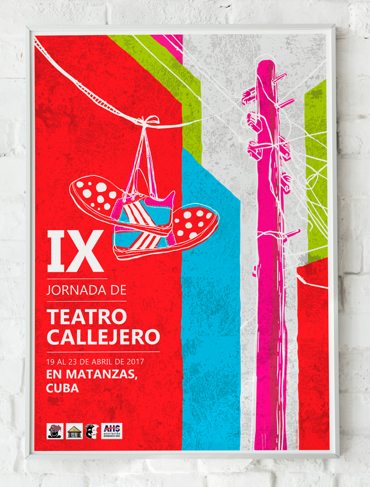

BRINGING ACTORS AND DIRECTOR'S VISION TO LIFE THROUGH SHAPES AND COLORS IS AN AMAZING EXPERIENCE,
FROM THE MAGIC OF CHILDREN'S PUPPET THEATER TO THE COMPLEXITY OF ADULT'S SCENEs AND MUSICAL PLAYS.
The "Festival de Teatro Rosa" (Pink Theater Fest)
is one of Cuba's first LGBT theater festivals so, at the time, it was still kind of a controversial event for some of the most
conservative audience.
I welcomed the great risponsability of contributing with my work to this very important community's acknowledgement and respect. So, I opted for a direct message,
through a simple yet meaningful image, with obvious symbolism and spiked with humor, in order to celebrate the pride and
bravery of this Fest's organizers and participants...
CALLEJERO IX

For a few consecutive years I had the pleasure of designing
the graphic image and making the television spots of "El Callejero"
, which is how the "International Street Theater Festival" of Matanzas, Cuba is colloquially known.
This is a very recognized event in the country and in other places of the world where street theater is loved and respected.
Conceiving the visualities of the same festival in different editions
was very interesting from a creative point of view, since it
forced me to create different graphic solutions for the same
topic in different contexts...
CALLEJERO X
For this 10th edition of the festival, I selected an aesthetic more inspired by urban
/ underground styles; using phonetic shortcuts and vibrant colors in order to engage a larger
and younger audience.
With a greater number of proposals, the activities were divided into three categories: national,
international and children's; each receiving a distinctive color within the general image of the event.
This led to the use of a more dynamic visuality with which the TV spot was also conceived.
CALLEJERO XII
The post-pandemic edition was, of course, shorter and more moderate; but very
significant for each actor and performer who was finally able to return to the
streets. Once again I had the opportunity to create the festival's graphics, and on
this occasion I tried to represent that mixture of quarantine melancholy and outdoor joy
in a simpler way...
CHILDREN STORIES
During the curfew period necessary in times of pandemic, many activities in our daily lives had to
change and, at times, evolve in order to continue functioning safely. The magical world of live theatrical
entertainment for children was no exception. The "Teatro El Mirón Cubano", a prestigious Cuban theater group,
considered the possibility of an online approach and then transformed many plays into posts and stories; that
I had the pleasure of illustrating and promoting through some simple animated ads...